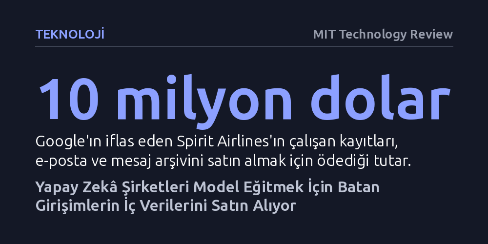

TEKNOLOJI · MIT Technology Review · 2026-10-14
Kamuya açık ve sentetik veri sınırına dayanan yapay zekâ şirketleri, modellerini eğitmek için iflas eden girişimlerin kod, e-posta ve Slack arşivlerini satın alıyor. Hızla büyüyen bu pazar, çalışanların özel yazışmalarının izinsiz satılması nedeniyle ciddi hukuki tartışmalar doğuruyor.
İflas eden bir şirketteki çalışma geçmişinizin ve özel yazışmalarınızın yok olmadığını, kreditörlerce yapay zekâ modellerine antrenman malzemesi olarak satılabildiğini gösteriyor.

Kripto girişimini kapatma kararı alan Keelan Miskell, şirketinin dijital arşivlerinin para edeceğini ilk başta hiç düşünmemişti; kullanıcılar anonimdi ve şirket yalnızca birkaç yıllıktı. Ancak tasfiye sürecinde bu dijital kalıntılar beklenmedik bir nakit kaynağına dönüştü. Miskell, yazdıkları kod tabanı karşılığında yaklaşık 25 bin dolar alırken, Google, Notion, Figma ve Slack üzerinde biriken şirket içi çalışma verileri için de 15 bin dolar civarında ek bir gelir bekliyor.
Bu satışı mümkün kılan, teknoloji dünyasında son dönemde filizlenen yeni bir sektör: Batan girişimlere tasfiye hizmeti veren aracılar. Carta ve AngelList verilerine göre girişim kapanışları her yıl yüzde 26 ile 56 arasında artış gösterirken, iflas sürecinin getirdiği hukuki, mali ve operasyonel yükleri hafifleten danışmanlık firmaları ve tasfiye memurlarından oluşan yeni bir ekosistem türedi. Bu ekosistemin öncülerinden SimpleClosure, sunduğu tasfiye paketlerine veri satışını da ekledi. Şirketin kurduğu platform, iflas eden kurucuların kodlarını ve e-postadan sohbet kayıtlarına kadar uzanan tüm çalışma alanı verilerini yapay zekâ laboratuvarlarına satmasını sağlıyor.
Daha önce nadir görülen ve sektörde bir tabu olarak karşılanan bu tür veri satışları artık olağan bir iş modeline dönüştü. SimpleClosure üzerinden yürütülen tasfiye süreçlerinin yaklaşık yüzde 47'si artık kod ya da şirket içi veri satışını da içeriyor. Platform şimdiye dek 150'den fazla işleme aracılık etti ve yıl sonuna kadar batmakta olan girişimlerin kasasına 10 milyon dolardan fazla kaynak aktarmayı hedefliyor.
Yapay zekâ laboratuvarlarının iflas eden şirketlerin iç yazışmalarına yönelmesinin temelinde, kamuya açık internet verilerinin ve algoritmik olarak türetilen sentetik verilerin sınırına dayanılmış olması yatıyor. İnternette taranabilecek kaliteli metinler tükenirken, modeller tarafından üretilen yapay veriler de gerçek iş hayatının karmaşıklığını yansıtmaktan uzak kalıyor; hatta var olmayan tarihlere veya olaylara atıfta bulunmak gibi mantıksal hatalar barındırabiliyor.
Surge AI gibi veri sağlayıcıları, müşterilerinin yapay zekâ ajanlarını eğitebilmesi için adeta birer sanal antrenman sahası kuruyor. Bu ortamlarda yazılım ajanları, karmaşık bir bilgi işlem altyapısındaki yazılım hatalarını çözmek ya da hukuki temyiz dilekçeleri hazırlamak gibi gerçekçi görevlerde pratik yapıyor. Bu pratiklerin gerçeğe yakın olabilmesi için ise şirket içi fikir ayrılıklarını, çetrefilli mesleki kararları ve çalışanlar arasındaki doğal etkileşimleri içeren ham verilere ihtiyaç duyuluyor.
Bir şirketin derinlikli ve zengin tartışmalar barındıran Slack geçmişi, bir başka firmanın tüm e-posta, takvim ve mesaj arşivlerinin toplamından çok daha değerli görülebiliyor. Ne var ki bu gerçek dünya verilerinin modellerin başarısını ne ölçüde artırdığı henüz belirsizliğini koruyor; hiçbir teknoloji firması sentetik veri ile gerçek kurumsal veri arasındaki performans farkını ortaya koyan nesnel bir test sonucu yayımlamış değil. Değerlemelerin tamamen spekülatif araştırma tezlerine dayanması nedeniyle alıcılar aynı veri seti için birbirinden uçurum derecesinde farklı fiyatlar teklif edebiliyor.
Piyasadaki bu belirsizlik ve değerleme zorlukları, dev şirketlerin milyarlarca dolarlık veri operasyonlarına girişmesini engellemiyor. İflas koruma sürecine giren havayolu şirketi Spirit Airlines'ın varlıkları satışa çıktığında Google, yapay zekâ veri şirketi Mercor'a karşı açık artırmada üstünlük sağlayarak havayolunun onlarca yıllık kurumsal verisini 10 milyon dolara satın aldı. Bu paket, 100 milyon kurumsal e-postayı, 500 milyon Microsoft Teams mesajını ve 176 bin çalışanın özlük kaydını kapsıyordu.
Benzer şekilde, SpaceX'in yapay zekâ biriminin de modellerini eğitmek amacıyla zor durumdaki girişimlerden veri satın alma seçeneklerini değerlendirdiği basına yansıdı. Başarısız olan küçük girişimlerden dev havayolu şirketlerine kadar uzanan bu satış dalgası, teknoloji devlerinin veri açlığını doyurmak için hiçbir dijital atığı geride bırakmak istemediğini açıkça ortaya koyuyor.
Bu yeni pazar, beraberinde derin hukuki ve etik kırılmaları da getiriyor. Yapay zekâ girişimlerine danışmanlık yapan hukukçular bu verileri hukuki açıdan son derece riskli ve kontrolsüz olarak nitelendiriyor. Veri satıcıları ve alıcıları, hassas kişisel verileri ve insan kaynakları kayıtlarını ayıkladıklarını iddia etseler de binlerce e-posta ve takvim kaydının arasına gizlenmiş doktor randevuları, çocukların okul servis saatleri veya özel akşam yemeği planları gibi mahrem ayrıntıların tamamen temizlenmesi neredeyse imkânsız. Nitekim Spirit Airlines çalışanlarının sendikası da mahremiyet ihlali gerekçesiyle satışa derhal itiraz etti.
Meselenin bir diğer yakıcı boyutu ise bu satışlardan kimin kazanç sağladığı. Şirket içi yazışmalar çalışanların emeği ve mesaisiyle üretilmesine rağmen, iflas sonrasındaki satış gelirleri çalışanlara değil imtiyazlı kreditörlere ve yatırımcılara aktarılıyor. Hukuk profesörü Ifeoma Ajunwa, bu durumu bir tür sermaye gaspı olarak değerlendiriyor; zira hukuki teamüller çalışanların gözetlenmesine sadece işlerini yapabilmeleri koşuluyla izin veriyor, şirket kapandığında ise bu meşruiyet tamamen ortadan kalkıyor. “İşverenlerin çalışanların verilerini satmadan önce açık rızalarını alması gerekir,” diyen Ajunwa, buna karşın mevcut mevzuatta bu satışları yasaklayan açık bir federal yasa bulunmadığına dikkat çekiyor.
Sonuç olarak, veri satışı yapan girişim kurucuları bile verilerini tam olarak kimin satın aldığını ya da modellerde nasıl işleneceğini göremiyor. Şimdilik kuralları henüz belirlenmemiş bir Vahşi Batı atmosferinde ilerleyen bu pazar, yapay zekâ balonu patlamadığı sürece tasfiye masasındaki şirket enkazlarından değer devşirmeye devam edecek gibi görünüyor.